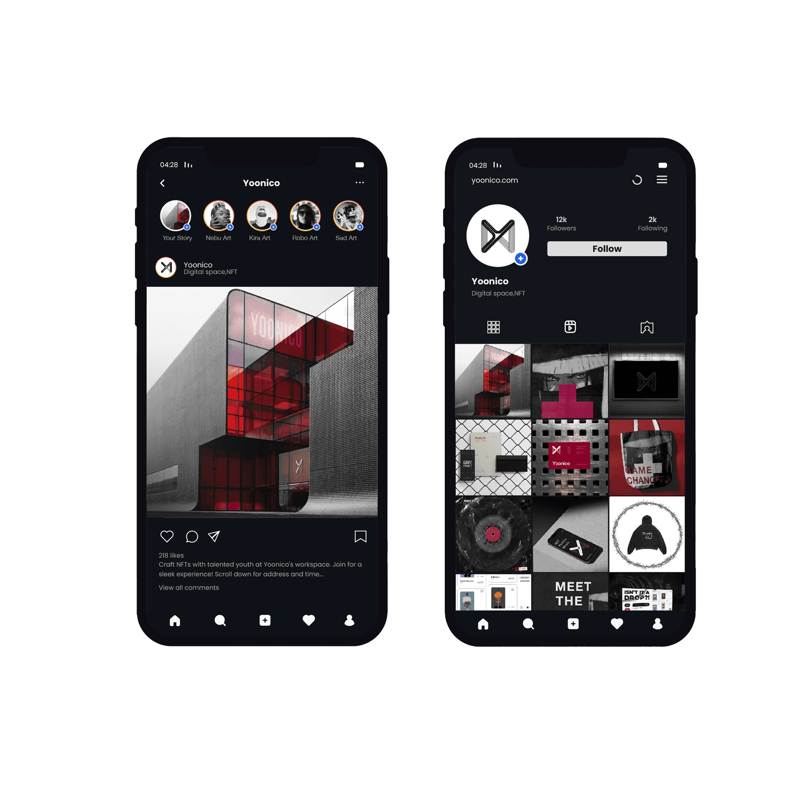
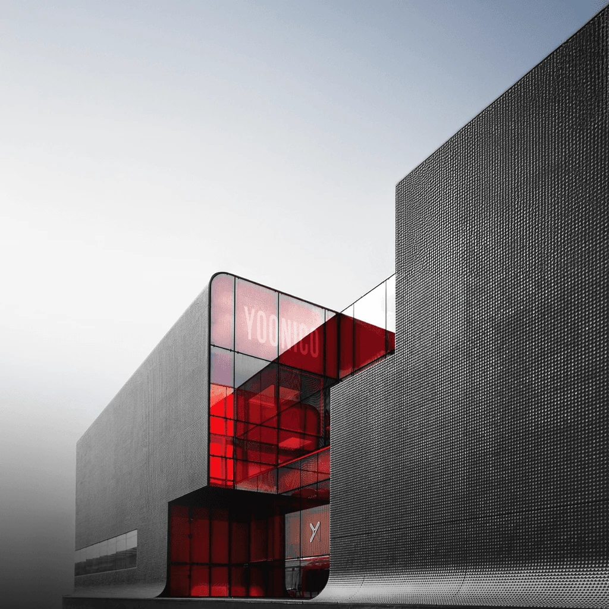
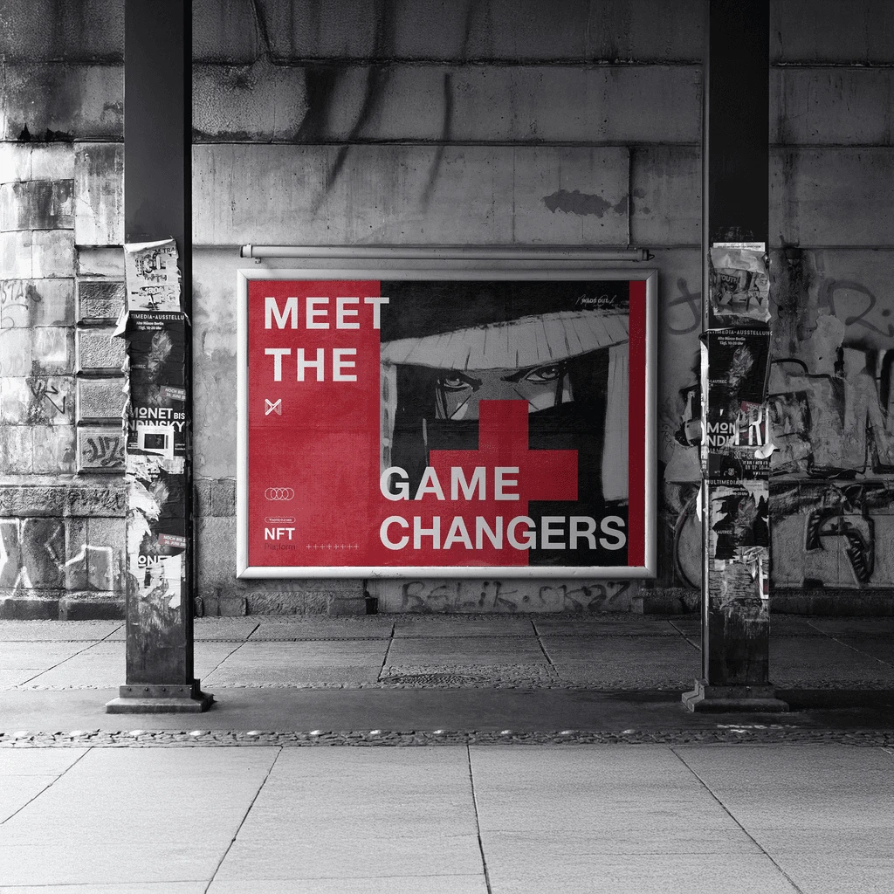
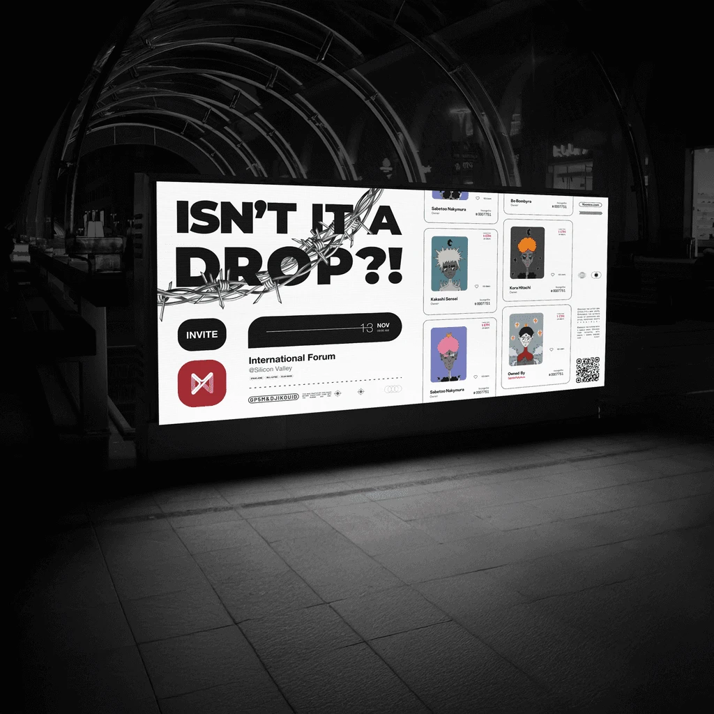
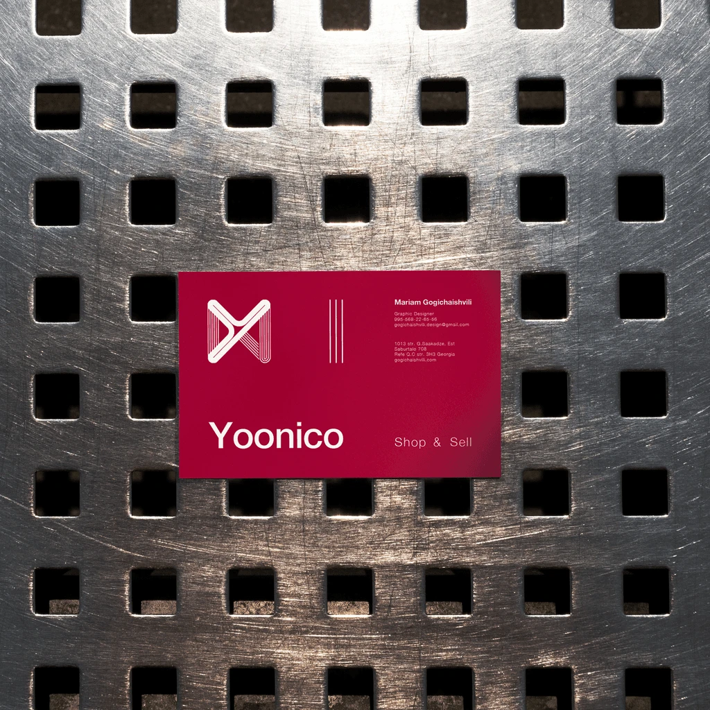

01 / NFT marketplace
Yoonico
Branding
A visual identity for an NFT marketplace, developed across the logo, digital communications and campaign graphics. Explore the identity and its applications below.
Show 9 moreShow less




